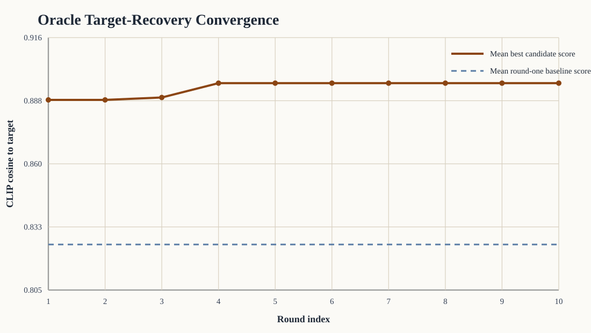
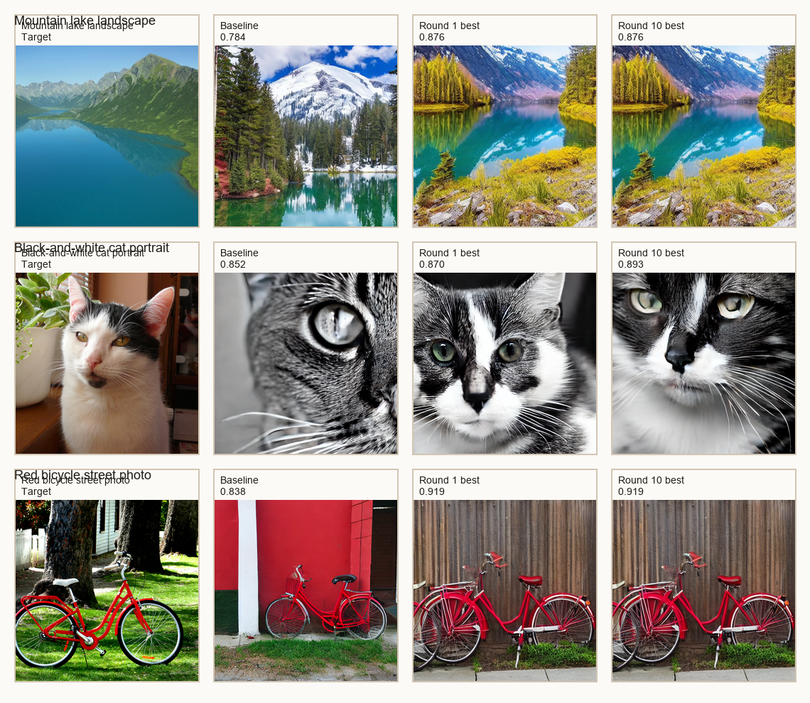

Oracle Target-Recovery Analysis
This bundle measures how closely StableSteering can recover a held-out real target image when initialized only from a manually written caption.
Scope
- targets:
3 - rounds per target:
10 - candidates per round:
4
Aggregate summary
- mean round-one baseline similarity:
0.825 - mean round-ten best-candidate similarity:
0.896 - mean improvement from baseline to round ten:
0.071
Target-level summary
| target | baseline | round 1 best | round 10 best | delta baseline -> round 10 |
|---|---|---|---|---|
| Mountain lake landscape | 0.784 | 0.876 | 0.876 | 0.092 |
| Black-and-white cat portrait | 0.852 | 0.870 | 0.893 | 0.040 |
| Red bicycle street photo | 0.838 | 0.919 | 0.919 | 0.081 |
Interpretation boundary
- The oracle selects candidates using CLIP image-embedding similarity to the hidden target.
- This is a target-recovery proxy task, not a human-quality judgment.
- Improvement should therefore be interpreted as recovery in oracle space rather than broad visual superiority.
Figures

